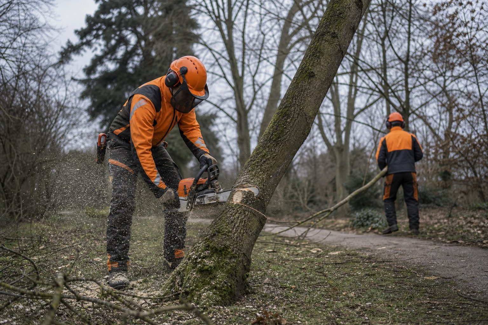

Motorsäge: Welche Ausbildung Mitarbeiter brauchen – die Module der DGUV Information 214-059
Ohne nachgewiesene Ausbildung darf im Betrieb niemand die Kettensäge anwerfen. Was Modul A und Modul B vermitteln, wer sie braucht und was neben dem Schein zur Pflicht gehört.

- Modul A: zwei Tage, 16 Unterrichtseinheiten, Fällung bis 20 Zentimeter; Modul B: 24 Einheiten für stärkere Bäume, Voraussetzung ist Modul A.
- Der Schein ersetzt weder die jährliche Unterweisung nach DGUV Vorschrift 1 noch die Ausrüstung: Schnittschutzhose, Stiefel, Helm mit Visier und Gehörschutz.
- Bewährt: Modul A für alle, die regelmäßig sägen, Modul B für zwei bis drei erfahrene Mitarbeiter; Lehrgänge im Winter buchen.
Die Motorsäge ist das Werkzeug mit dem höchsten Verletzungsrisiko pro Betriebsstunde, das auf GaLaBau-Baustellen im Einsatz ist. Entsprechend klar sind die Anforderungen: Wer sie führt, muss ausgebildet, unterwiesen und ausgerüstet sein. Was das konkret heißt, beschreibt die DGUV Information 214-059, die in der Branche als Maßstab für Motorsägenlehrgänge gilt.
Modul A: Grundlagen
Der Einstieg dauert zwei Tage mit 16 Unterrichtseinheiten. Inhalte sind die Unfallverhütungsvorschriften, Aufbau, Wartung und Handhabung der Säge, Schnitttechniken am liegenden Holz, Arbeiten unter Spannung, Entasten und Ablängen – und die Fällung von Schwachholz bis 20 Zentimeter Brusthöhendurchmesser. Für die Mehrzahl der Arbeiten im GaLaBau – Gehölzrückschnitt, Rodungen von Sträuchern und kleinen Bäumen, Aufarbeiten von Sturmholz auf dem Boden – ist Modul A die Grundqualifikation.
Modul B: Fällung
Wer stärkere Bäume fällt, braucht Modul B. Es umfasst 24 Unterrichtseinheiten und setzt Modul A sowie praktische Erfahrung voraus. Inhalte sind Fälltechniken für Bäume über 20 Zentimeter, Beurteilung von Baum und Umfeld, Fallrichtung, Rückweg, Umgang mit Hängern und Spannungen – und die Aufarbeitung. Zwei weitere Module decken Sonderfälle ab: Arbeiten mit der Motorsäge von Hubarbeitsbühnen und in der Seilklettertechnik. Sie sind Sache spezialisierter Baumpflegebetriebe.
Was der Schein nicht ersetzt
Die Ausbildung ist der erste Schritt. Die Unterweisung – vor der ersten Tätigkeit und danach mindestens jährlich, nach § 4 der DGUV Vorschrift 1 – ist der zweite. Sie ist betriebs- und einsatzbezogen und wird dokumentiert. Der dritte Schritt ist die Ausrüstung: Schnittschutzhose oder -beinlinge, Schnittschutzstiefel, Helm mit Gesichts- und Gehörschutz, Handschuhe. Wer Modul A hat und in Jeans sägt, ist ausgebildet und trotzdem nicht arbeitsfähig.
Dazu kommt die Organisation: Motorsägenarbeit ist keine Ein-Mann-Arbeit. Bei Fällarbeiten ist eine zweite Person in Ruf- oder Sichtweite Pflicht, ein Erste-Hilfe-Set gehört ans Fahrzeug, und die Rettungskette – wer ruft wen, wo ist der nächste Zugang für den Rettungswagen – muss vor dem ersten Schnitt geklärt sein.
Wer im Betrieb welches Modul braucht
Ein Betrieb mit fünf Kolonnen braucht nicht fünf Modul-B-Träger. In der Praxis hat sich bewährt: Modul A für alle Facharbeiter und Vorarbeiter, die regelmäßig mit der Säge arbeiten; Modul B für zwei bis drei erfahrene Mitarbeiter, die die Fällungen übernehmen und als Ansprechpartner für die anderen dienen. Auszubildende dürfen unter Aufsicht arbeiten, wenn das Ausbildungsziel es verlangt – der Lehrgang gehört aber in die Ausbildung, nicht in das Jahr danach.
Der Winter ist die Zeit
Motorsägenlehrgänge finden überwiegend zwischen November und März statt – wenn die Bildungsträger Kapazität haben und die Betriebe Leute entbehren können. Wer im Januar bucht, hat die Zertifikate, bevor die Rodungssaison beginnt. Und wer die Ausbildung als festen Baustein im ersten Jahr nach der Gesellenprüfung einplant, muss sie nicht mehr im Einzelfall organisieren.
Quellen
- DGUV Information 214-059: Ausbildung für Arbeiten mit der Motorsäge und die Durchführung von Baumarbeiten – publikationen.dguv.de/regelwerk/dguv-informationen/1296/ausbildung-fu...
- DGUV Vorschrift 1: Grundsätze der Prävention, § 4 Unterweisung der Versicherten – publikationen.dguv.de/regelwerk/dguv-vorschriften/
Kommentare
Noch keine Kommentare. Schreiben Sie den ersten.

Baggerschein: Was der DGUV Grundsatz 301-005 von Betrieben verlangt – und was nicht
Einen amtlichen Baggerführerschein gibt es nicht. Trotzdem darf niemand ohne Qualifizierung und Beauftragung auf den Sitz. Was der Grundsatz der Unfallversicherer vorschreibt, wer ausbilden darf und was auf der Straße zusätzlich gilt.

Wer zahlt die Sicherheitsschuhe?
Der Betrieb. Sicherheitsschuhe, Helm, Gehörschutz, Schnittschutzhose und alle andere persönliche Schutzausrüstung muss der Arbeitgeber stellen, und er darf die Kosten nicht auf den Mitarbeiter umlegen (§ 3 Absatz 3 Arbeitsschutzgesetz). Normale Arbeitskleidung ohne Schutzfunktion ist keine PSA – hier entscheiden Tarif und Arbeitsvertrag.
Zecken: 185 Risikogebiete – was Betriebe für ihre Kolonnen tun müssen
Das Robert Koch-Institut hat die FSME-Karte erweitert: Nordsachsen und Halle sind neu dabei, fast jeder zweite Landkreis ist Risikogebiet. Für Landschaftsgärtner ist die Zecke ein Berufsrisiko – mit Vorsorgepflicht, Impfangebot und Berufskrankheit.